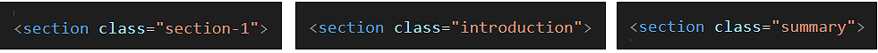
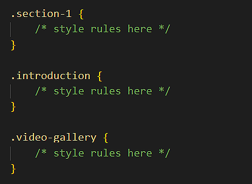
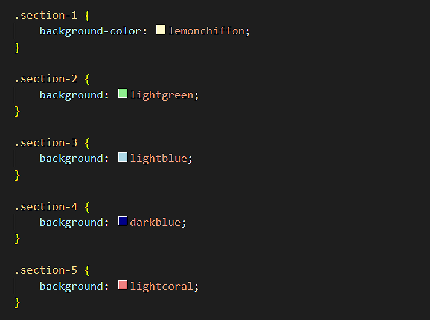
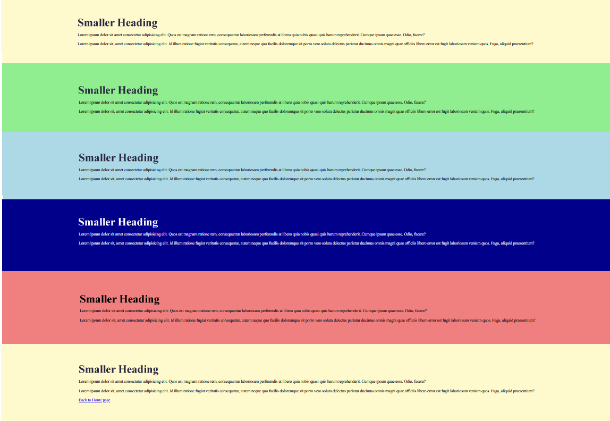
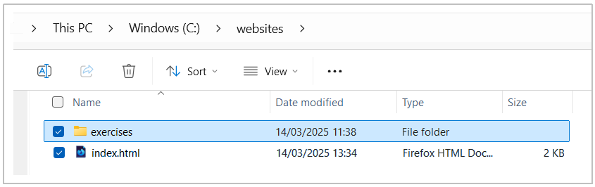

Learning Goals
At the end of this Tutorial, you will be able to:
- Create and use classes in HTML and CSS.
- Create and use custom properties in HTML and CSS.
About classes and class names
In the sample file page-3.html, you created a web page with a <main> container block and inside that six <section> containers.
You will now assign different text and background colours to the content inside these various <section> elements.

To assign different colours (or other styles) to the content with the same tag (such as <section>), you can use what are called classes of that tag.
You can think of classes as a version of an HTML tag.
In an HTML file, you assign a class to a <section> or other tag by giving it a class name. Below you can see some examples of class names assigned to opening <section> tags.
Here are the rules about class names:
- Class names are entered within a pair of double quotes ("").

- Class names cannot have a space within them. You can type the hyphen (-) character to join words.

- An element can have more than one class name assigned to it. Separate the different class names with a single space.

- If an element has more than one class name, the order of the names is not important.

In a linked CSS stylesheet, you style rules to an HTML element in the same way as you would with any other CSS selector – but you must begin the selector name with a full stop (.). See the examples below.
Adding colours to your page-3.html web page
Follow the steps below:
- In VS Code, open your page-3.html web age.
- Add the following class names to the six <section> containers, and save the file.
 Note that you can apply the same class name to multiple elements in a web page. In this example, both the first and last <section> have the same class name.
Note that you can apply the same class name to multiple elements in a web page. In this example, both the first and last <section> have the same class name. - Open your style-3.css stylesheet, create the following CSS class selectors at the end of the file, and apply a different background-color value to each one, and save the file. See the example below. 
- If you have applied a dark background colour to any <section>, update the relevant text colours to white to make the text readable. See the example below.

Your final web page should look similar to that below.
Adding custom colours to style-3.css
In this next exercise you will add custom colours to your style-3.css file, and then use these to update the appearance of your page-3.html web page.
- In VS Code, open your style-3.css stylesheet file from your websites/assets/css folder.
- Update the colours for the class selectors, using these custom properties. See the examples below.

✅ You are now finished working with your page-3.html web page and style-3.css stylesheet.
Uploading your work to GitHub
You are now ready to upload your work to your account on GitHub.
- Open a new tab in your web browser and go to github.com. If you are not already signed in to your GitHub account, sign in now.

- On your GitHub home page, click the name of the repository (‘repo’) that holds your web pages. Its name will look as follows, where username is your chosen username on GitHub.
username.github.io

- On the next GitHub screen displayed, near the right of the screen, you can see a button named Add file. Click on it.

- From the dropdown list displayed, choose the option Upload files.

- In File Explorer (Windows) or Finder (Apple Mac), drag-and-drop your index.html file and your 📁 assets and 📁 exercises sub-folders to upload them to your repository on GitHub. 
- Scroll down to the bottom of the GitHub screen, and accept or edit the short message (Add files via upload) in the Commit changes box.
- Finally, click the green Commit changes button to upload your entire exercises sub-folder and all the files it contains.
Your web pages are now published on GitHub at web addresses similar to the following, where username is the username you have chosen for your GitHub account:
https://username.github.io/index.html
– or simply –
https://username.github.io
https://username.github.io/exercises/page-1.html
https://username.github.io/exercises/page-2.html
https://username.github.io/exercises/page-3.html
It may take a few minutes for your uploaded files to appear on GitHub.